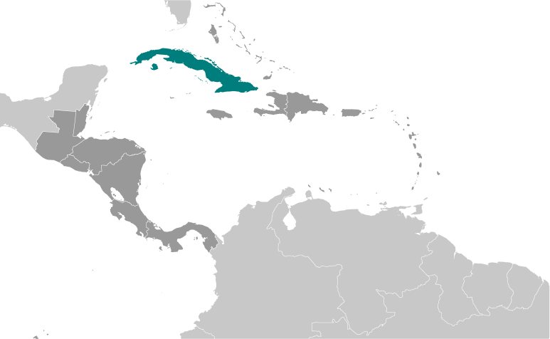
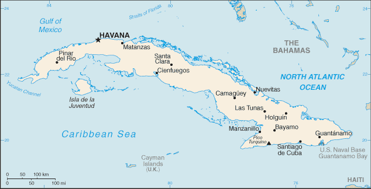
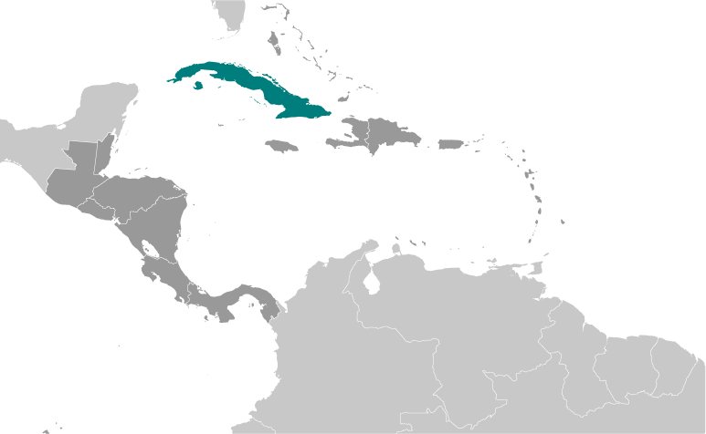
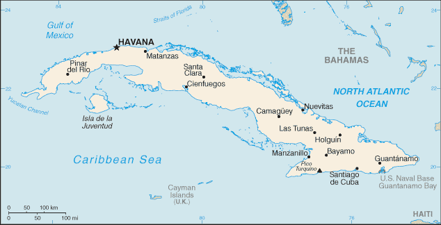

Central America and Caribbean :: CUBA
Introduction :: CUBA
-
The native Amerindian population of Cuba began to decline after the European discovery of the island by Christopher COLUMBUS in 1492 and following its development as a Spanish colony during the next several centuries. Large numbers of African slaves were imported to work the coffee and sugar plantations, and Havana became the launching point for the annual treasure fleets bound for Spain from Mexico and Peru. Spanish rule eventually provoked an independence movement and occasional rebellions that were harshly suppressed. US intervention during the Spanish-American War in 1898 assisted the Cubans in overthrowing Spanish rule. The Treaty of Paris established Cuban independence from Spain in 1898 and, following three-and-a-half years of subsequent US military rule, Cuba became an independent republic in 1902 after which the island experienced a string of governments mostly dominated by the military and corrupt politicians. Fidel CASTRO led a rebel army to victory in 1959; his authoritarian rule held the subsequent regime together for nearly five decades. He stepped down as president in February 2008 in favor of his younger brother Raul CASTRO. Cuba's communist revolution, with Soviet support, was exported throughout Latin America and Africa during the 1960s, 1970s, and 1980s. On 8-9 September 2017, Hurricane Irma passed along the north coast of Cuba causing extensive damage to structures, roads, and power supplies.The country faced a severe economic downturn in 1990 following the withdrawal of former Soviet subsidies worth $4-6 billion annually. Cuba at times portrays the US embargo, in place since 1961, as the source of its difficulties. Over the past decade, there has been growing communication with the Cuban Government to address national interests. As a result of efforts begun in December 2014 to re-establish diplomatic relations with the Cuban Government, which were severed in January 1961, the US and Cuba reopened embassies in their respective countries on 20 July 2015. However, the embargo remains in place.Illicit migration of Cuban nationals to the US via maritime and overland routes has been a longstanding challenge. In FY 2016, the US Coast Guard interdicted 5,228 Cuban nationals at sea. Also in FY 2016, 44,553 Cuban migrants presented themselves at various land border ports of entry throughout the US. On 12 January 2017, the US and Cuba signed a Joint Statement ending the so-called “wet-foot, dry-foot” policy – by which Cuban nationals who reached US soil were permitted to stay – facilitating the repatriation of Cuban migrants. Illicit Cuban migration has since dropped significantly.
Geography :: CUBA
-
Caribbean, island between the Caribbean Sea and the North Atlantic Ocean, 150 km south of Key West, Florida21 30 N, 80 00 WCentral America and the Caribbeantotal: 110,860 sq kmland: 109,820 sq kmwater: 1,040 sq kmcountry comparison to the world: 107slightly smaller than Pennsylvaniatotal: 28.5 kmborder countries: US Naval Base at Guantanamo Bay 28.5 kmnote: Guantanamo Naval Base is leased by the US and remains part of Cuba3,735 kmterritorial sea: 12 nmcontiguous zone: 24 nmexclusive economic zone: 200 nmtropical; moderated by trade winds; dry season (November to April); rainy season (May to October)mostly flat to rolling plains, with rugged hills and mountains in the southeastmean elevation: 108 melevation extremes: lowest point: Caribbean Sea 0 mhighest point: Pico Turquino 1,974 mcobalt, nickel, iron ore, chromium, copper, salt, timber, silica, petroleum, arable landagricultural land: 60.3%arable land 33.8%; permanent crops 3.6%; permanent pasture 22.9%forest: 27.3%other: 12.4% (2011 est.)8,700 sq km (2012)large population clusters found throughout the country, the more significant ones being in the larger towns and cities, particularly the capital of Havanathe east coast is subject to hurricanes from August to November (in general, the country averages about one hurricane every other year); droughts are commonair and water pollution; biodiversity loss; deforestationparty to: Antarctic Treaty, Biodiversity, Climate Change, Climate Change-Kyoto Protocol, Desertification, Endangered Species, Environmental Modification, Hazardous Wastes, Law of the Sea, Marine Dumping, Ozone Layer Protection, Ship Pollution, Wetlandssigned, but not ratified: Marine Life Conservationlargest country in Caribbean and westernmost island of the Greater Antilles
People and Society :: CUBA
-
11,147,407 (July 2017 est.)country comparison to the world: 80noun: Cuban(s)adjective: Cubanwhite 64.1%, mulatto or mixed 26.6%, black 9.3%note: data represent racial self-identification from Cuba's 2012 national census (2012 est.)Spanish (official)nominally Roman Catholic 85%, Protestant, Jehovah's Witnesses, Jewish, Santerianote: prior to CASTRO assuming power0-14 years: 16.57% (male 950,870/female 896,476)15-24 years: 12.22% (male 706,882/female 655,446)25-54 years: 44.43% (male 2,490,483/female 2,462,250)55-64 years: 11.84% (male 640,150/female 679,603)65 years and over: 14.94% (male 763,058/female 902,189) (2017 est.)total dependency ratio: 43.3youth dependency ratio: 23.3elderly dependency ratio: 19.9potential support ratio: 5 (2015 est.)total: 41.5 yearsmale: 40.1 yearsfemale: 42.6 years (2017 est.)country comparison to the world: 41-0.29% (2017 est.)country comparison to the world: 21610.7 births/1,000 population (2017 est.)country comparison to the world: 1848.7 deaths/1,000 population (2017 est.)country comparison to the world: 74-4.9 migrant(s)/1,000 population (2017 est.)country comparison to the world: 191large population clusters found throughout the country, the more significant ones being in the larger towns and cities, particularly the capital of Havanaurban population: 77.3% of total population (2017)rate of urbanization: 0% annual rate of change (2015-20 est.)HAVANA (capital) 2.137 million (2015)at birth: 1.06 male(s)/female0-14 years: 1.06 male(s)/female15-24 years: 1.08 male(s)/female25-54 years: 1.01 male(s)/female55-64 years: 0.94 male(s)/female65 years and over: 0.81 male(s)/femaletotal population: 0.99 male(s)/female (2016 est.)39 deaths/100,000 live births (2015 est.)country comparison to the world: 106total: 4.4 deaths/1,000 live birthsmale: 4.9 deaths/1,000 live birthsfemale: 3.9 deaths/1,000 live births (2017 est.)country comparison to the world: 181total population: 78.8 yearsmale: 76.5 yearsfemale: 81.3 years (2017 est.)country comparison to the world: 571.71 children born/woman (2017 est.)country comparison to the world: 17173.7% (2014)11.1% of GDP (2014)country comparison to the world: 127.52 physicians/1,000 population (2014)5.3 beds/1,000 population (2012)improved:urban: 96.4% of populationrural: 89.8% of populationtotal: 94.9% of populationunimproved:urban: 3.6% of populationrural: 10.2% of populationtotal: 5.1% of population (2015 est.)improved:urban: 94.4% of populationrural: 89.1% of populationtotal: 93.2% of populationunimproved:urban: 5.6% of populationrural: 10.9% of populationtotal: 6.8% of population (2015 est.)0.4% (2016 est.)country comparison to the world: 7125,000 (2016 est.)country comparison to the world: 70<200 (2016 est.)degree of risk: intermediatefood or waterborne diseases: bacterial diarrhea and hepatitis Avectorborne diseases: dengue fevernote: active local transmission of Zika virus by Aedes species mosquitoes has been identified in this country (as of August 2016); it poses an important risk (a large number of cases possible) among US citizens if bitten by an infective mosquito; other less common ways to get Zika are through sex, via blood transfusion, or during pregnancy, in which the pregnant woman passes Zika virus to her fetus (2016)24.6% (2016)country comparison to the world: 5612.8% of GDP (2010)country comparison to the world: 2definition: age 15 and over can read and writetotal population: 99.8%male: 99.9%female: 99.8% (2015 est.)total: 14 yearsmale: 13 yearsfemale: 14 years (2015)total: 6.1%male: 6.4%female: 5.6% (2010 est.)country comparison to the world: 131illicit emigration is a continuing problem; Cubans attempt to depart the island and enter the US using homemade rafts, alien smugglers, direct flights, or falsified visas; Cubans also use non-maritime routes to enter the US including direct flights to Miami and overland via the southwest border; the number of Cubans migrating to the US has surged since the beginning of improved US-Cuban relations in late December 2014
Government :: CUBA
-
conventional long form: Republic of Cubaconventional short form: Cubalocal long form: Republica de Cubalocal short form: Cubaetymology: name derives from the Taino Indian designation for the island "coabana" meaning "great place"communist statename: Havanageographic coordinates: 23 07 N, 82 21 Wtime difference: UTC-5 (same time as Washington, DC, during Standard Time)daylight saving time: +1hr, begins second Sunday in March; ends first Sunday in November; note - Cuba has been known to alter the schedule of DST on short notice in an attempt to conserve electricity for lighting15 provinces (provincias, singular - provincia) and 1 special municipality* (municipio especial); Artemisa, Camaguey, Ciego de Avila, Cienfuegos, Granma, Guantanamo, Holguin, Isla de la Juventud*, La Habana, Las Tunas, Matanzas, Mayabeque, Pinar del Rio, Sancti Spiritus, Santiago de Cuba, Villa Clara20 May 1902 (from Spain 10 December 1898; administered by the US from 1898 to 1902); not acknowledged by the Cuban Government as a day of independenceTriumph of the Revolution (Liberation Day), 1 January (1959)several previous; latest adopted by referendum 15 February 1976, effective 24 February 1976; amended 1978, 1992, 2002 (2016)civil law system based on Spanish civil codehas not submitted an ICJ jurisdiction declaration; non-party state to the ICCtcitizenship by birth: yescitizenship by descent: yesdual citizenship recognized: noresidency requirement for naturalization: unknown16 years of age; universalchief of state: President of the Council of State and President of the Council of Ministers Gen. Raul CASTRO Ruz (president since 24 February 2008); First Vice President of the Council of State and First Vice President of the Council of Ministers Miguel DIAZ-CANEL Bermudez (since 24 February 2013); note - the president is both chief of state and head of governmenthead of government: President of the Council of State and President of the Council of Ministers Gen. Raul CASTRO Ruz (president since 24 February 2008); First Vice President of the Council of State and First Vice President of the Council of Ministers Miguel DIAZ-CANEL Bermudez (since 24 February 2013)cabinet: Council of Ministers proposed by the president of the Council of State and appointed by the National Assembly; it is subordinate to the 31-member Council of State, which is elected by the Assembly to act on its behalf when it is not in sessionelections/appointments: president and vice presidents indirectly elected by the National Assembly for a 5-year term (may be reelected for another 5-year term); election last held on 24 February 2013 (next to be held in 2018)election results: Gen. Raul CASTRO Ruz (PCC) reelected president; percent of National Assembly vote - 100%; Miguel DIAZ-CANEL Bermudez (PCC) elected vice president; percent of National Assembly vote - 100%description: unicameral National Assembly of People's Power or Asamblea Nacional del Poder Popular (614 seats; members directly elected by absolute majority vote; members serve 5-year terms); note - the National Candidature Commission submits a slate of approved candidates; to be elected, candidates must receive more than 50% of valid votes otherwise the seat remains vacant or the Council of State can declare another electionelections: last held on 3 February 2013 (next to be held in 2018)election results: Cuba's Communist Party is the only legal party, and officially sanctioned candidates run unopposedhighest court(s): People's Supreme Court (consists of court president, vice president, 41 professional justices, and NA lay judges); organization includes the State Council, criminal, civil, administrative, labor, crimes against the state, and military courts)judge selection and term of office: professional judges elected by the National Assembly are not subject to a specific term; lay judges nominated by workplace collectives and neighborhood associations and elected by municipal or provincial assemblies; lay judges appointed for 5-year terms and serve up to 30 days per yearsubordinate courts: People's Provincial Courts; People's Regional Courts; People's CourtsCuban Communist Party or PCC [Raul CASTRO Ruz]Cuban Commission for Human Rights and National Reconciliation (CCDHRN)Ladies in White (Damas de Blanco)Patriotic Union of Cuba or UNPACUother: political dissidents and bloggersACP, ALBA, AOSIS, CELAC, FAO, G-77, IAEA, ICAO, ICC (national committees), ICRM, IFAD, IFRCS, IHO, ILO, IMO, IMSO, Interpol, IOC, IOM (observer), IPU, ISO, ITSO, ITU, LAES, LAIA, NAM, OAS (excluded from formal participation since 1962), OPANAL, OPCW, PCA, Petrocaribe, PIF (partner), UN, UNCTAD, UNESCO, UNIDO, Union Latina, UNWTO, UPU, WCO, WFTU (NGOs), WHO, WIPO, WMO, WTOchief of mission: Ambassador Jose Ramon CABANAS Rodriguez (since 17 September 2015)chancery: 2630 16th Street NW, Washington, DC 20009telephone: [1] (202) 797-8518FAX: NAconsulate(s) general: NAchief of mission: Ambassador (vacant); Charge d'Affaires Scott HAMILTON (since 13 July 2017)embassy: Calzada between L & M Streets, Vedado, Havanamailing address: use embassy street addresstelephone: [53] (7) 839-4100FAX: NAfive equal horizontal bands of blue (top, center, and bottom) alternating with white; a red equilateral triangle based on the hoist side bears a white, five-pointed star in the center; the blue bands refer to the three old divisions of the island: central, occidental, and oriental; the white bands describe the purity of the independence ideal; the triangle symbolizes liberty, equality, and fraternity, while the red color stands for the blood shed in the independence struggle; the white star, called La Estrella Solitaria (the Lone Star) lights the way to freedom and was taken from the flag of Texasnote: design similar to the Puerto Rican flag, with the colors of the bands and triangle reversedroyal palm; national colors: red, white, bluename: "La Bayamesa" (The Bayamo Song)lyrics/music: Pedro FIGUEREDOnote: adopted 1940; Pedro FIGUEREDO first performed "La Bayamesa" in 1868 during the Ten Years War against the Spanish; a leading figure in the uprising, FIGUEREDO was captured in 1870 and executed by a firing squad; just prior to the fusillade he is reputed to have shouted, "Morir por la Patria es vivir" (To die for the country is to live), a line from the anthem
Economy :: CUBA
-
The government continues to balance the need for loosening its socialist economic system against a desire for firm political control. In April 2011, the government held the first Cuban Communist Party Congress in almost 13 years, during which leaders approved a plan for wide-ranging economic changes. Since then, the government has slowly and incrementally implemented limited economic reforms, including allowing Cubans to buy electronic appliances and cell phones, stay in hotels, and buy and sell used cars. The government has cut state sector jobs as part of the reform process, and it has opened up some retail services to "self-employment," leading to the rise of so-called "cuentapropistas" or entrepreneurs. Approximately 476,000 Cuban workers are currently registered as self-employed.The Cuban regime has updated its economic model to include permitting the private ownership and sale of real estate and new vehicles, allowing private farmers to sell agricultural goods directly to hotels, allowing the creation of non-agricultural cooperatives, adopting a new foreign investment law, and launching a “Special Development Zone” around the Mariel port.Since late 2000, Venezuela has provided petroleum products to Cuba on preferential terms, supplying nearly 100,000 barrels per day. Cuba has been paying for the oil, in part, with the services of Cuban personnel in Venezuela, including some 30,000 medical professionals.$132.9 billion (2016 est.)$134.2 billion (2015 est.)$128.5 billion (2014 est.)note: data are in 2012 US dollarscountry comparison to the world: 78$81.56 billion (2013 est.)note: data are in Cuban Pesos at 1 CUP = 1 US$; official exchange rate-0.9% (2016 est.)4.4% (2015 est.)1% (2014 est.)country comparison to the world: 195$11,900 (2016 est.)$12,200 (2015 est.)$11,600 (2014 est.)note: data are in 2014 US dollarscountry comparison to the world: 12611% of GDP (2016 est.)12.1% of GDP (2015 est.)12.5% of GDP (2014 est.)country comparison to the world: 152household consumption: 58.3%government consumption: 32%investment in fixed capital: 9.7%investment in inventories: -1.3%exports of goods and services: 14.8%imports of goods and services: -13.5% (2016 est.)agriculture: 3.9%industry: 22%services: 74.8% (2016 est.)sugar, tobacco, citrus, coffee, rice, potatoes, beans; livestockpetroleum, nickel, cobalt, pharmaceuticals, tobacco, construction, steel, cement, agricultural machinery, sugar-4.1% (2016 est.)country comparison to the world: 1854.686 millionnote: state sector 72.3%, non-state sector 27.7% (2016 est.)country comparison to the world: 86agriculture: 18%industry: 10%services: 72% (2013 est.)2% (2016 est.)2.4% (2015 est.)note: data are official rates; unofficial estimates are about double the official figurescountry comparison to the world: 14NA%lowest 10%: NA%highest 10%: NA%revenues: $50.83 billionexpenditures: $56.48 billion (2016 est.)62.3% of GDP (2016 est.)country comparison to the world: 8-6.9% of GDP (2016 est.)country comparison to the world: 18332.1% of GDP (2016 est.)38.8% of GDP (2015 est.)country comparison to the world: 155calendar year4.5% (2016 est.)4.6% (2015 est.)country comparison to the world: 171NA%NA%$21.92 billion (31 December 2016 est.)$18.91 billion (31 December 2015 est.)country comparison to the world: 66$48.19 billion (31 December 2016 est.)$42.59 billion (31 December 2015 est.)country comparison to the world: 66$NA$2.008 billion (2016 est.)$1.941 billion (2015 est.)country comparison to the world: 35$2.535 billion (2016 est.)$3.572 billion (2015 est.)country comparison to the world: 131petroleum, nickel, medical products, sugar, tobacco, fish, citrus, coffeeRussia 22.9%, Venezuela 15.4%, Spain 10.3% (2016)$10.28 billion (2016 est.)$11.75 billion (2015 est.)country comparison to the world: 95petroleum, food, machinery and equipment, chemicalsChina 29.2%, Spain 14%, Italy 5.1%, Brazil 4.7%, Mexico 4.4%, Russia 4.3%, Canada 4.1%, US 4% (2016)$12.3 billion (31 December 2016 est.)$12.1 billion (31 December 2015 est.)country comparison to the world: 70$20.59 billion (31 December 2016 est.)$29.54 billion (31 December 2015 est.)country comparison to the world: 91$NA$4.138 billion (2006 est.)country comparison to the world: 75Cuban pesos (CUP) per US dollar -1 (2016 est.)1 (2015 est.)1 (2014 est.)22.7 (2013 est.)1 (2012 est.)
Energy :: CUBA
-
population without electricity: 200,000electrification - total population: 99.9%electrification - urban areas: 100%electrification - rural areas: 95% (2013)19.12 billion kWh (2015 est.)country comparison to the world: 7715.98 billion kWh (2015 est.)country comparison to the world: 750 kWh (2016 est.)country comparison to the world: 1250 kWh (2016 est.)country comparison to the world: 1386.711 million kW (2015 est.)country comparison to the world: 7490.7% of total installed capacity (2015 est.)country comparison to the world: 600% of total installed capacity (2015 est.)country comparison to the world: 730.9% of total installed capacity (2015 est.)country comparison to the world: 1478.5% of total installed capacity (2015 est.)country comparison to the world: 7449,830 bbl/day (2016 est.)country comparison to the world: 540 bbl/day (2014 est.)country comparison to the world: 110101,500 bbl/day (2014 est.)country comparison to the world: 45124 million bbl (1 January 2017 es)country comparison to the world: 71102,800 bbl/day (2014 est.)country comparison to the world: 68180,000 bbl/day (2015 est.)country comparison to the world: 6025,540 bbl/day (2014 est.)country comparison to the world: 6651,970 bbl/day (2014 est.)country comparison to the world: 821.25 billion cu m (2015 est.)country comparison to the world: 642.063 billion cu m (2015 est.)country comparison to the world: 870 cu m (2016 est.)country comparison to the world: 890 cu m (2016 est.)country comparison to the world: 11370.79 billion cu m (1 January 2017 es)country comparison to the world: 5926 million Mt (2013 est.)country comparison to the world: 77
Communications :: CUBA
-
total subscriptions: 1,322,002subscriptions per 100 inhabitants: 12 (July 2016 est.)country comparison to the world: 67total: 3,987,900subscriptions per 100 inhabitants: 36 (July 2016 est.)country comparison to the world: 144general assessment: fixed-line and mobile services run by the state-run ETESCA; mobile-cellular telephone service is expensive and must be paid in convertible pesos; Cuban Government has opened several hundred Wi-Fi hotspots around the island, which are expensive, and launched a new residential Internet pilot in Havanadomestic: fixed-line density remains low at about 10 per 100 inhabitants; mobile-cellular service expanding but remains only about 35 per 100 personsinternational: country code - 53; the ALBA-1 fiber-optic submarine cable links Cuba, Jamaica, and Venezuela; fiber-optic cable laid to but not linked to US network; satellite earth station - 1 Intersputnik (Atlantic Ocean region); several US telecommunication companies have signed voice and data deals to serve their customers while in Cuba (2017)government owns and controls all broadcast media with private ownership of electronic media prohibited; however, several online independent news sites exist and those that are not openly critical of the government are often tolerated; government operates 5 national TV networks and many local TV stations; government operates 6 national radio networks, an international station, and many local radio stations; Radio-TV Marti is beamed from the US (2017).cutotal: 4,334,022percent of population: 38.8%note: private citizens are prohibited from buying computers or accessing the Internet without special authorization; foreigners may access the Internet in large hotels but are subject to firewalls; some Cubans buy illegal passwords on the black market or take advantage of public outlets to access limited email and the government-controlled "intranet" (July 2016 est.)country comparison to the world: 85
Transportation :: CUBA
-
number of registered air carriers: 3inventory of registered aircraft operated by air carriers: 18annual passenger traffic on registered air carriers: 1,294,458annual freight traffic on registered air carriers: 20,919,645 mt-km (2015)CU (2016)133 (2017)country comparison to the world: 43total: 64over 3,047 m: 72,438 to 3,047 m: 101,524 to 2,437 m: 16914 to 1,523 m: 4under 914 m: 27 (2017)total: 69914 to 1,523 m: 11under 914 m: 58 (2013)gas 41 km; oil 230 km (2013)total: 8,367 kmstandard gauge: 8,195 km 1.435-m gauge (105 km electrified)narrow gauge: 172 km 1.000-m gaugenote: 70 km of standard gauge track is not for public use (2015)country comparison to the world: 26total: 60,858 kmpaved: 29,820 km (includes 639 km of expressways)unpaved: 31,038 km (2001)country comparison to the world: 69240 km (almost all navigable inland waterways are near the mouths of rivers) (2011)country comparison to the world: 94total: 3by type: cargo 1, passenger 1, refrigerated cargo 1registered in other countries: 5 (Curacao 1, Panama 2, unknown 2) (2010)country comparison to the world: 136major seaport(s): Antilla, Cienfuegos, Guantanamo, Havana, Matanzas, Mariel, Nuevitas Bay, Santiago de Cuba
Military and Security :: CUBA
-
3.08% of GDP (2015)3.54% of GDP (2014)3.51% of GDP (2013)3.94% of GDP (2012)3.08% of GDP (2011)Revolutionary Armed Forces (Fuerzas Armadas Revolucionarias, FAR): Revolutionary Army (Ejercito Revolucionario, ER, includes Territorial Militia Troops (Milicia de Tropas de Territoriales, MTT)), Revolutionary Navy (Marina de Guerra Revolucionaria, MGR, includes Marine Corps), Revolutionary Air and Air Defense Forces (Defensas Anti-Aereas y Fuerza Aerea Revolucionaria, DAAFAR); Youth Labor Army (Ejercito Juvenil del Trabajo, EJT) (2013)17-28 years of age for compulsory military service; 2-year service obligation for males, optional for females (2017)the collapse of the Soviet Union deprived the Cuban military of its major economic and logistic support and had a significant impact on the state of Cuban equipment; the army remains well trained and professional in nature; the lack of replacement parts for its existing equipment has increasingly affected operational capabilities (2013)
Transnational Issues :: CUBA
-
US Naval Base at Guantanamo Bay is leased to US and only mutual agreement or US abandonment of the facility can terminate the leasecurrent situation: Cuba is a source country for adults and children subjected to sex trafficking and forced labor; child sex trafficking and child sex tourism occur in Cuba, while some Cubans are forced into prostitution in South America and the Caribbean; allegations have been made that some Cubans have been forced or coerced to work at Cuban medical missions abroad; assessing the scope of trafficking within Cuba is difficult because of the lack of informationtier rating: Tier 2 Watch List - Cuba does not fully comply with the minimum standards for the elimination of trafficking; however, it is making significant efforts to do so; Cuba’s penal code does not criminalize all forms of human trafficking, but the government reported that it is in the process of amending its criminal code to comply with the 2000 UN TIP Protocol, to which it acceded in 2013; the government in 2014 prosecuted and convicted 13 sex traffickers and provided services to the victims in those cases but does not have shelters specifically for trafficking victims; the government did not recognize forced labor as a problem and took no action to address it; state media produced newspaper articles and TV and radio programs to raise public awareness about sex trafficking (2015)territorial waters and air space serve as transshipment zone for US- and European-bound drugs; established the death penalty for certain drug-related crimes in 1999